TRenderer
环境
-
cmake 3.29.2
-
GNU 9.2.0
-
ninja 1.11.1
使用并行任务来编译工程
-
assimp-5.2.5
-
Qt Creator 5.14.2
-
glm
-
tbb(并行编程库)(暂未使用...)
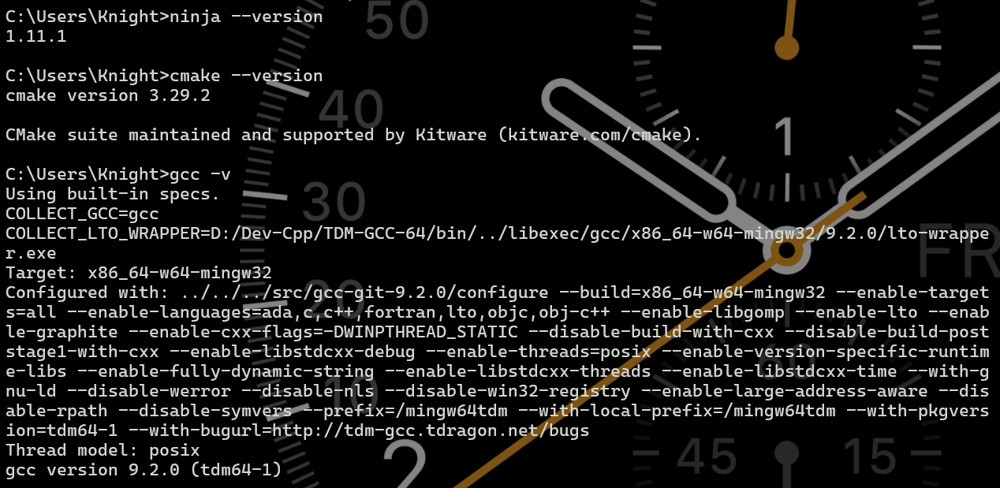
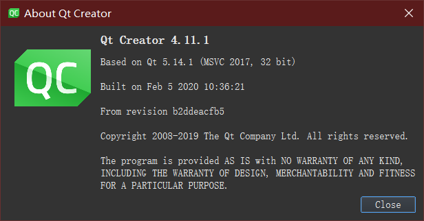
记录:编译安装assimp并成功链接
参考资料:
在源码目录下
# 需修改路径
# cmake -G"MinGW Makefiles" -B build -DCMAKE_INSTALL_PREFIX=安装路径 -DWITH_SOME_OPTIONS=ON
cmake -G"MinGW Makefiles" -B build -DCMAKE_INSTALL_PREFIX=K:\code\QTProject\TRenderer\packages\assimp5.2.5 -DWITH_SOME_OPTIONS=ON
# 使用8个核并行编译
cmake --build build --parallel 8
cmake --build build --target install
但是还是链接不上.dll 动态库,
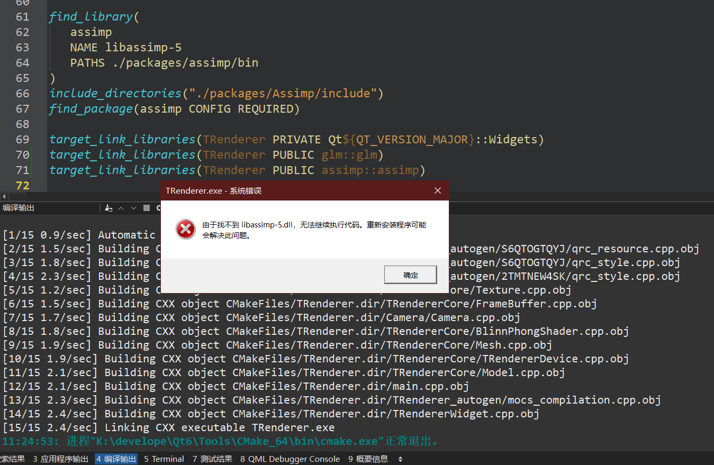
明明已经在CMakeList.txt中配置了
set(assimp_DIR ./packages/assimp5.2.5/lib/cmake/assimp-5.2)
find_package(assimp CONFIG REQUIRED)
target_link_libraries(TRenderer PUBLIC assimp::assimp)
相应的文件也是在这里(./packages/assimp5.2.5/lib/cmake/assimp-5.2)的,就是不知道为什么链接不上...
咨询群友过后, 发现把动态库libassimp-5.dll放在build好的目录下即可解决(.exe所在目录)
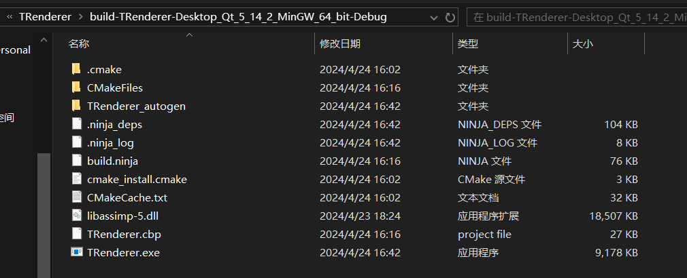
主要
BasicDataStruture
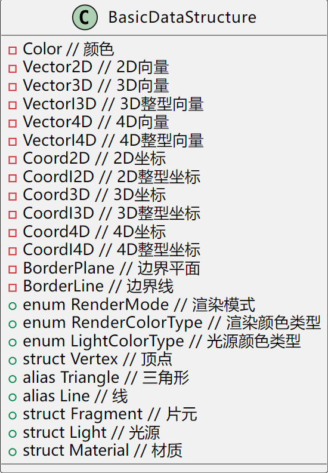
using Color = glm::vec3;
using Vector2D = glm::vec2;
using Vector3D = glm::vec3;
using VectorI3D = glm::ivec3;
using Vector4D = glm::vec4;
using VectorI4D = glm::ivec4;
using Coord2D = glm::vec2;
using CoordI2D = glm::ivec2;
using Coord3D = glm::vec3;
using CoordI3D = glm::ivec3;
using Coord4D = glm::vec4;
using CoordI4D = glm::ivec4;
using BorderPlane = glm::vec4;
using BorderLine = glm::vec3;
enum RenderMode{FACE,EDGE,VERTEX};
enum RenderColorType{BACKGROUND, LINE, POINT};
enum LightColorType{DIFFUSE, SPECULAR, AMBIENT};
struct Vertex
{
Coord3D worldSpacePos;
union
{
Coord4D clipSpacePos;
Coord4D ndcSpacePos;
};
CoordI2D screenPos;
float screenDepth;
Vector3D normal;
Coord2D texCoord;
};
using Triangle = std::array<Vertex, 3>;
using Line = std::array<CoordI2D, 2>;
struct Fragment
{
Coord3D worldSpacePos;
CoordI2D screenPos;
float screenDepth;
Color fragmentColor;
Vector3D normal;
Coord2D texCoord;
};
struct Light
{
union{
Coord4D pos;
Vector4D dir;
};
Color ambient;
Color diffuse;
Color specular;
};
struct Material
{
int diffuse;
int specular;
float shininess;
};
+struct Vertex {
-Coord3D worldSpacePos // 世界空间位置
-union {
-Coord4D clipSpacePos // 裁剪空间位置
-Coord4D ndcSpacePos // 归一化设备坐标空间位置
}
-CoordI2D screenPos // 屏幕位置
-float screenDepth // 屏幕深度
-Vector3D normal // 法向量
-Coord2D texCoord // 纹理坐标
}
+struct Fragment {
-Coord3D worldSpacePos // 世界空间位置
-CoordI2D screenPos // 屏幕位置
-float screenDepth // 屏幕深度
-Color fragmentColor // 片元颜色
-Vector3D normal // 法向量
-Coord2D texCoord // 纹理坐标
}
+struct Light {
-union {
-Coord4D pos // 位置
-Vector4D dir // 方向
}
-Color ambient // 环境光颜色
-Color diffuse // 漫反射颜色
-Color specular // 镜面反射颜色
}
+struct Material {
-int diffuse // 漫反射
-int specular // 镜面反射
-float shininess // 高光度
}
BlinnPhongShader
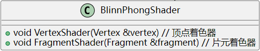
FrameBuffer
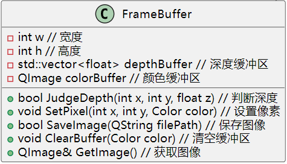
Mesh
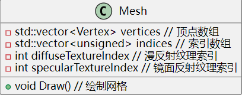
Model
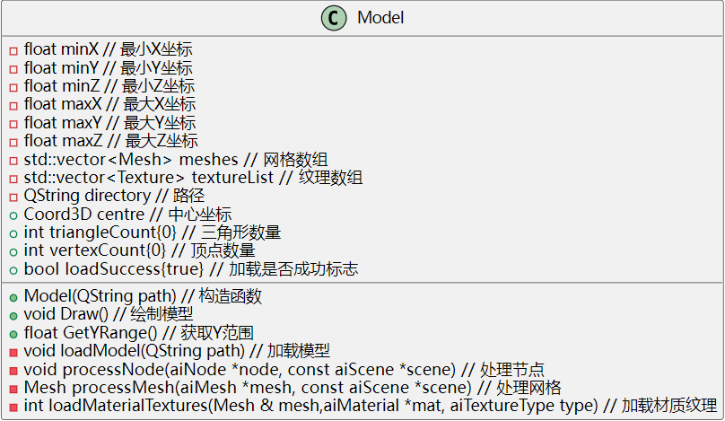
Shader
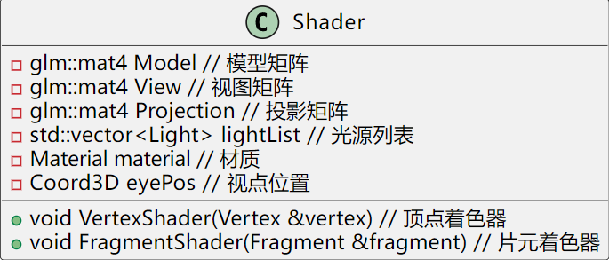
Texture
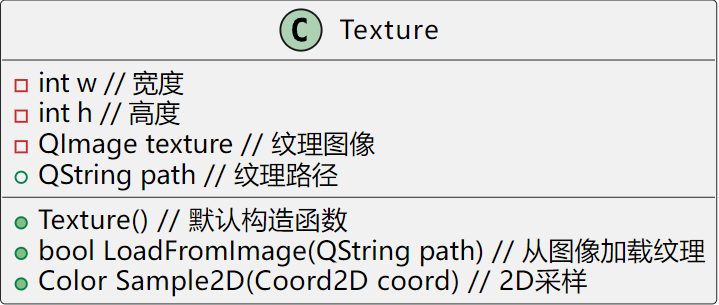
EdgeEquation
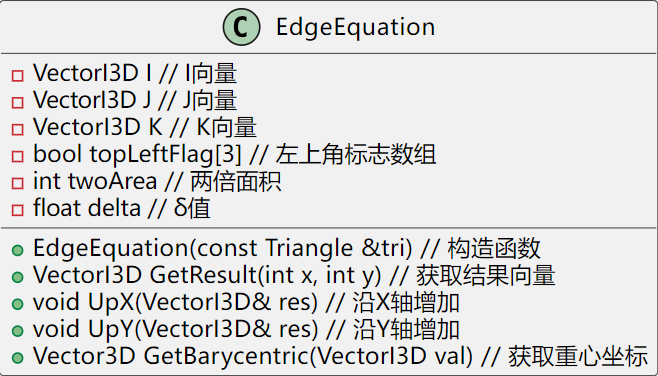
TRendererDevice
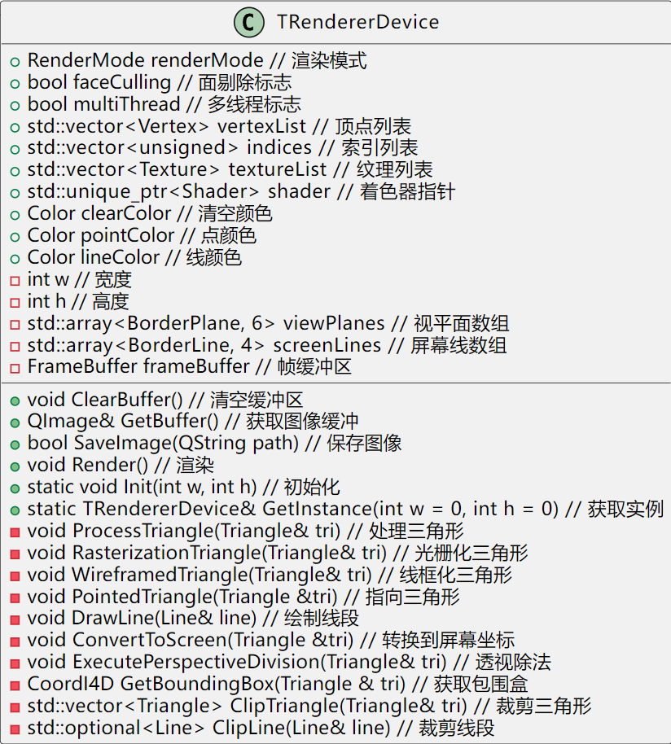
TRendererDevice(int w, int h);
TRendererDevice(const TRendererDevice&) = delete;
TRendererDevice(TRendererDevice &&) = delete;
TRendererDevice& operator=(const TRendererDevice&) = delete;
TRendererDevice& operator=(TRendererDevice&&) = delete
是在 TRendererDevice 类中定义特殊的成员函数，用于控制对象的拷贝和移动操作。
-
TRendererDevice(int w, int h);：这是类的构造函数，用于创建TRendererDevice对象。它接受两个参数w和h，分别表示宽度和高度。 -
TRendererDevice(const TRendererDevice&) = delete;：这是删除拷贝构造函数的语法。通过将拷贝构造函数标记为删除，表明禁止使用拷贝构造函数来创建新对象，即不允许通过拷贝构造函数进行对象的复制。 -
TRendererDevice(TRendererDevice &&) = delete;：这是删除移动构造函数的语法。同样地，通过将移动构造函数标记为删除，表明禁止使用移动构造函数来创建新对象，即不允许通过移动构造函数进行对象的移动构造。 -
TRendererDevice& operator=(const TRendererDevice&) = delete;：这是删除拷贝赋值运算符的语法。通过将拷贝赋值运算符标记为删除，表明禁止使用拷贝赋值运算符来进行对象的赋值操作，即不允许通过拷贝赋值运算符来将一个对象的值复制给另一个对象。 -
TRendererDevice& operator=(TRendererDevice&&) = delete;：这是删除移动赋值运算符的语法。同样地，通过将移动赋值运算符标记为删除，表明禁止使用移动赋值运算符来进行对象的移动赋值操作，即不允许通过移动赋值运算符来将一个对象的值移动给另一个对象。
这些删除操作符的作用是为了防止对象的拷贝和移动，从而保证类的对象在程序中不会被意外地复制或移动，确保代码的稳定性和安全性。通常情况下，如果某个类的对象不需要被拷贝或移动，就可以将对应的拷贝构造函数、移动构造函数、拷贝赋值运算符和移动赋值运算符标记为删除。
cpp
Mesh() = default;有什么作用
在C++中，Mesh() = default;是一个使用默认构造函数的声明。当您使用Mesh()这种形式声明构造函数时，编译器会生成一个默认构造函数，该构造函数会对类的成员变量进行初始化。如果没有显式声明构造函数，编译器会为类生成一个默认构造函数，这个默认构造函数会对类的基本数据类型进行零初始化（例如，整型数据会初始化为0，浮点型数据会初始化为0.0）。
使用Mesh() = default;的声明方式，您在某种程度上告诉编译器：使用默认的构造函数，而不需要您自己手动实现构造函数。这样可以简化代码，尤其是对于没有特殊构造逻辑的类。
some tips
Vector4D 和 VectorI4D
Vector4D 和 VectorI4D 都表示四维向量，但它们的数据类型有所不同：
- Vector4D：
Vector4D通常指的是四维浮点数向量，即四个浮点数组成的向量。在图形学和计算机图形领域中，常用的表示方法是使用浮点数表示向量的坐标分量。-
例如，一个
Vector4D可以表示为(x, y, z, w)，其中x,y,z是浮点数坐标，w通常用于表示齐次坐标中的缩放因子。 -
VectorI4D：
VectorI4D则表示四维整数向量，即四个整数组成的向量。在某些需要使用整数表示坐标或其他数据的情况下，可以使用整数向量。- 例如，一个
VectorI4D可以表示为(x, y, z, w)，其中x,y,z是整数坐标，w可以用于其他整数数据。
Vector4D 和 VectorI4D 在表示的数据类型上有所不同，一个是浮点数向量，另一个是整数向量，适用于不同的数据处理场景。
缩放因子w
缩放因子可以在多个场合下使用，如几何变换、透视投影、齐次坐标处理以及光照计算等方面，用来调整物体的大小、深度、权重或者其他影响因素。
-
齐次坐标：在三维图形学中，齐次坐标是一种扩展的坐标系统，其中每个点由四个坐标表示（x, y, z, w）。w 是齐次坐标的缩放因子，用来
表示点的权重或深度信息。通过齐次坐标，可以简化对坐标变换的处理，例如平移、旋转和缩放。 -
透视投影：进行透视投影时，缩放因子可以用来
控制远近平面的拉伸效果。在透视投影中，距离摄像机远的物体会被拉伸，而缩放因子可以影响这种拉伸的程度。 -
几何变换：在进行几何变换（例如缩放、旋转、平移）时，缩放因子可以用来
控制物体的大小变化。通过调整缩放因子，可以实现物体的放大或缩小效果。 -
光照计算：在光照计算中，缩放因子可以
影响光照效果的强度。例如，在 Phong 光照模型中，光照强度与法向量和光线方向的夹角以及缩放因子等因素相关。
DEBUG(⛔:未解决 / 🌈:已解决)
🌈[error]: CMakeFiles/.../TRendererDevice.cpp.obj: in function `Shader::~Shader()':
error: CMakeFiles/TRenderer.dir/TRendererCore/TRendererDevice.cpp.obj: in function `Shader::~Shader()':
K:\code\QTProject\TRenderer\TRendererCore\Shader.hpp:13: error: undefined reference to `__imp__ZTV6Shader'
声明了一个析构函数 ~Shader(), 但是没有提供对应的定义
需要在实现文件（ Shader.cpp）中提供对析构函数 ~Shader() 的定义。例如：
而本项目中Shader 类是一个纯虚基类, 则需要为析构函数提供一个纯虚函数定义。
将析构函数定义为纯虚函数：
然后可在派生类中实现该纯虚析构函数。
附:Shader 类在 TRendererDevice 类中的作用
Shader 类在 TRendererDevice 类中的作用是定义了一个抽象的着色器接口,
从而允许用户根据需要实现不同的着色器类来定制渲染效果。
在
TRendererDevice.h中,Shader类起到了定义一个抽象基类的作用。这个抽象基类是一个纯虚类, 它定义了一些虚函数VertexShader和FragmentShader, 这些函数需要派生类来实现。这样做的目的是
为了实现着色器的多态性, 允许用户根据需要创建不同的着色器类(如顶点着色器、片元着色器)并实现这些虚函数, 以达到不同的渲染效果。具体来说,
Shader类的定义在Shader.hpp文件中, 包含了以下成员函数声明：在
TRendererDevice类中, 有一个指向Shader类或其派生类对象的智能指针：通过这个成员变量,
TRendererDevice类可以在渲染过程中使用用户指定的着色器来处理顶点和片元的着色逻辑。在
TRendererDevice类的渲染过程中, 可能会调用Shader类中定义的虚函数, 例如上面的VertexShader和FragmentShader这些函数会在派生类中被实现, 从而实现具体的顶点和片元着色逻辑。